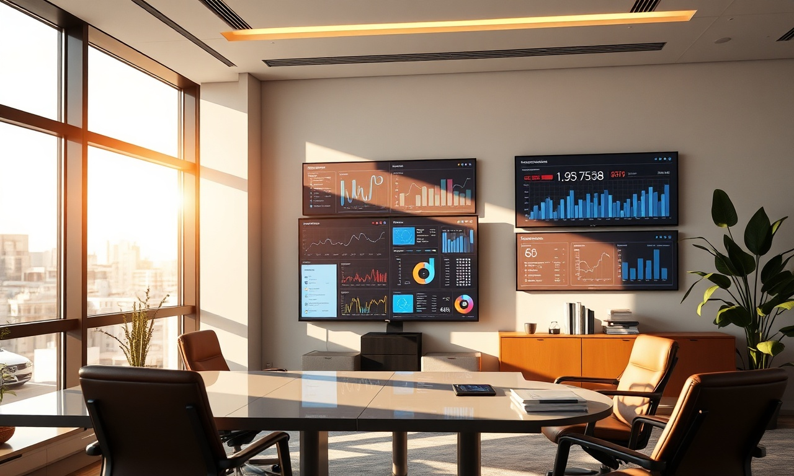

Introduction
Vous souhaitez faire connaître votre entreprise au Maroc et attirer plus de clients ? Google Ads (anciennement AdWords) est l'outil publicitaire le plus puissant pour apparaître en tête des résultats de recherche. Ce guide débutant vous explique pas à pas comment créer et optimiser vos campagnes SEA. Que vous soyez à Casablanca, Rabat ou Marrakech, maîtrisez les bases pour un retour sur investissement maximal. Chez DatRey, agence digitale marocaine, nous vous accompagnons dans cette aventure.
Qu'est-ce que Google Ads et pourquoi l'utiliser ?
Google Ads est une plateforme de publicité en ligne qui permet d'afficher vos annonces sur Google et ses partenaires. Vous payez uniquement lorsqu'un internaute clique sur votre annonce (modèle PPC). Au Maroc, plus de 90% des recherches en ligne passent par Google. Avec Google Ads, vous touchez vos clients au moment précis où ils cherchent vos produits ou services.
تريد تطبيق هذه الاستراتيجيات بدون جهد؟ خبراء DatRey يتولون الأمر.
Les avantages pour les entreprises marocaines
- Ciblage géographique : choisissez des villes comme Casablanca, Marrakech ou Fès.
- Contrôle du budget : fixez un budget journalier adapté à votre taille.
- Mesure précise : suivez chaque clic, appel ou vente générée.
- Rapidité : vos annonces sont visibles en quelques heures.
Comment créer votre première campagne Google Ads
Suivez ces étapes pour lancer votre campagne en toute sérénité.
1. Définir vos objectifs
Avant tout, déterminez ce que vous voulez : ventes, appels téléphoniques, visites en magasin ou inscriptions. Choisissez l'objectif dans Google Ads : ventes, prospects, trafic vers le site web, notoriété de la marque.
2. Choisir le type de campagne
Pour un débutant, la campagne Search (Réseau de Recherche) est idéale. Vos annonces textuelles apparaissent sur les résultats de recherche Google. Vous pouvez aussi tester les campagnes Display (bannières) ou Shopping (pour le e-commerce).
3. Configurer le ciblage
Indiquez la localisation : Maroc, puis sélectionnez les villes où vous opérez. Définissez la langue (français ou arabe) et les mots-clés pertinents. Par exemple, si vous êtes un restaurant à Casablanca, ciblez "restaurant Casablanca", "meilleur restaurant" etc.
4. Définir votre budget
Google Ads fonctionne aux enchères. Fixez un budget journalier (ex: 100 MAD) et un coût par clic (CPC) maximum. Commencez modestement, puis ajustez selon les performances.
5. Rédiger vos annonces
Créez des titres accrocheurs (30 caractères max) et des descriptions (90 caractères). Incluez un appel à l'action : "Appelez maintenant", "Obtenez un devis gratuit". Utilisez des extensions d'annonces pour ajouter numéro de téléphone, adresse ou liens supplémentaires.
Optimiser vos campagnes pour le marché marocain
Le Maroc a ses spécificités. Adaptez votre stratégie.
- Langue : Testez des annonces en français et en arabe (dialectal ou littéraire). Les internautes marocains sont bilingues.
- Mobile : Plus de 70% des recherches se font sur mobile. Assurez-vous que votre site est responsive.
- Heures de diffusion : Programmez vos annonces aux heures de pointe (9h-12h et 15h-18h).
- Mots-clés locaux : Ajoutez des termes comme "pas cher", "livraison", "prix maroc".
Mesurer et améliorer vos performances
Utilisez les indicateurs clés : impressions, clics, CTR (taux de clics), conversions, coût par conversion. Un bon CTR est supérieur à 3%. Si vos résultats sont faibles, testez de nouveaux mots-clés ou améliorez vos annonces. Pensez aux tests A/B.
Tableau comparatif : Google Ads vs Référencement naturel (SEO)
| Critère | Google Ads | SEO |
|---|---|---|
| Délai de résultats | Immédiat | 3-6 mois |
| Coût | Payant par clic | Gratuit (mais temps/ressources) |
| Visibilité | En haut des résultats | Résultats naturels |
| Contrôle | Total (budget, ciblage) | Limité (dépend de Google) |
| Durabilité | Stop = fin des annonces | Effet durable |
Pour une stratégie complète, combinez Google Ads et SEO. Découvrez nos services SEO et services Google Ads.
Erreurs courantes à éviter
- Ignorer les mots-clés négatifs (exclure les termes non pertinents).
- Négliger le suivi des conversions (installez le tag Google Ads).
- Choisir des mots-clés trop génériques (ex: "chaussures" au lieu de "chaussures de sport Casablanca").
- Ne pas optimiser les pages de destination (landing pages).
FAQ - Questions fréquentes sur Google Ads
Quel budget minimum pour Google Ads au Maroc ?
Il n'y a pas de minimum, mais nous recommandons au moins 50 MAD par jour pour obtenir des données significatives. Commencez petit et augmentez progressivement.
Combien de temps faut-il pour voir des résultats ?
Dès le lancement, vos annonces peuvent apparaître. Cependant, Google Ads a une phase d'apprentissage (1 à 2 semaines) pour optimiser les enchères. Soyez patient et analysez les performances après 2 semaines.
Dois-je faire appel à une agence pour gérer mes campagnes ?
Si vous manquez de temps ou d'expertise, une agence comme DatRey peut optimiser votre budget et vos résultats. Nous proposons des audits gratuits.
Conclusion
Google Ads est un levier puissant pour développer votre activité au Maroc. En suivant ce guide débutant, vous avez les bases pour lancer des campagnes efficaces. N'oubliez pas de tester, mesurer et ajuster. Pour aller plus loin, confiez votre SEA à des experts. Contactez DatRey dès aujourd'hui pour un devis personnalisé !
Image :

Image : 
Image :
Image :
Besoin d'accompagnement ?
Les experts DatRey vous aident à atteindre vos objectifs digitaux au Maroc.
Demander un audit gratuit →